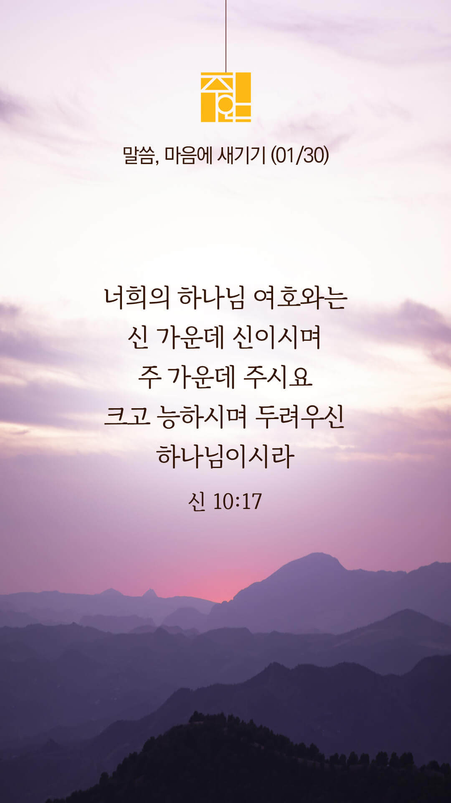

기도실 안내
2022년 01월 30일 (주일)
- 온라인 기도실은 온 회중이 함께 주님 앞으로 나아가는 자리입니다
- 30분 정도 여유를 가지고 하시기 바랍니다
- 말씀과 묵상, 찬양과 기도로 나아갑니다
- 배경 음악이 나올 수 있습니다 볼륨을 조절해주세요
준비가 되셨으면 아래의 버튼을 눌러주세요
할렐루야
내 영혼아 여호와를 찬양하라
시 146:1
- 가사를 묵상하며 읽습니다
내 삶의 주인
내가 그리스도와 함께
십자가에 못 박혔나니
이제 내가 사는 것이 아니요
오직 내 안에 예수께서
사시는 것이라
나를 위하여 자신을 버리사
향기로운 희생 제물로
하나님께 드리셨네
할렐루야
내 영혼아 여호와를 찬양하라
시 146:1
- 가사를 묵상하며 읽습니다
나를 사랑하신 그의 십자가
안에서 사는 것만이 생명의 길
내 삶의 주인 그리스도
날 대신하여 죽으신 주
내 안에 오늘도 사시는 주
이제 내가 사는 것 아니요
내 삶의 주인은 그리스도
할렐루야
내 영혼아 여호와를 찬양하라
시 146:1
내 삶의 주인 by 홍지열
위의 찬양이 끝나면 말씀읽기를 눌러주시면 됩니다
주의 말씀은 내 발에 등이요
내 길에 빛이니이다 (시119:105)
오늘의 말씀입니다
음악 소리가 크면 조절하시기 바랍니다

마음의 묵상
신 10:17
“너희의 하나님 여호와는 신 가운데 신이시며 주 가운데 주시요 크고 능하시며 두려우신 하나님이시라 사람을 외모로 보지 아니하시며 뇌물을 받지 아니하시고”
1. 우리 하나님이 유일한 신이시며 유일한 주이심을 고백하시나요?
2. 크고 능하신 하나님은 사람을 외모로 보지 않으심을 믿으시나요?
3. 지금 있는 모습 그대로 하나님께 자신을 드리며 잠시 기도합시다
저의 중심이 주님 앞에 늘 바로 서있길 원합니다
회개, 삶의 방향을 바꾸는 결정
이 모습 그대로 주님 앞에 나아갑니다
“그러므로 내가 스스로 거두어들이고
티끌과 재 가운데에서 회개하나이다”
- 욥기 42:6장 -
3분 정도 회개하며 주님 앞에 나아갑니다
사슴이 시냇물을 찾기에 갈급함 같이
시 42:1
- 다음의 말씀을 소리 내어 읽습니다
[시편 27:1-5]
1 여호와는 나의 빛이요 나의 구원이시니 내가 누구를 두려워하리요 여호와는 내 생명의 능력이시니 내가 누구를 무서워하리요
2 악인들이 내 살을 먹으려고 내게로 왔으나 나의 대적들, 나의 원수들인 그들은 실족하여 넘어졌도다
3 군대가 나를 대적하여 진 칠지라도 내 마음이 두렵지 아니하며 전쟁이 일어나 나를 치려 할지라도 나는 여전히 태연하리로다
사슴이 시냇물을 찾기에 갈급함 같이
시 42:1
- 다음의 말씀을 소리 내어 읽습니다
[시편 27:1-5]
4 내가 여호와께 바라는 한 가지 일 그것을 구하리니 곧 내가 내 평생에 여호와의 집에 살면서 여호와의 아름다움을 바라보며 그의 성전에서 사모하는 그것이라
5 여호와께서 환난 날에 나를 그의 초막 속에 비밀히 지키시고 그의 장막 은밀한 곳에 나를 숨기시며 높은 바위 위에 두시리로다
하나님 나라
1. 한국교회와 선교를 위한 기도
하나님 아버지,
한국교회를 이단세력으로부터 지켜주시고 교회 안의 비진리와 미혹의 정체가 명백하게 드러나게 하옵소서.
간절한 마음으로 3분 정도 기도합시다
나라와 민족
2. 대선을 위한 기도
하나님 아버지,
사회적 약자가 소외되지 않고 미래세대인 젊은이들에게 희망을 주고 개인의 자유가 불의하게 침해당하지 않는 나라를 만들어 가는 지도자가 세워지게 하옵소서.
간절한 마음으로 3분 정도 기도합시다
가정
3. 가정을 위한 기도
하나님 아버지,
가정 안에 관계의 불화가 복음으로 회복되게 하시고 진정한 사랑 공동체로 거듭나게 하옵소서.
간절한 마음으로 3분 정도 기도합시다
다음 세대
4. 다음 세대를 위한 기도
하나님 아버지,
다음세대를 말씀으로 양육하는 목회자들과 교사들이 주님의 마음을 품고 거룩한 사명을 기쁨으로 감당하게 하옵소서.
간절한 마음으로 3분 정도 기도합시다
주안교회
5. 주안 교회를 위한 기도
하나님 아버지,
지금도 우리를 둘러싼 여러 가지 어려움과 시련이 있지만, 주안의 모든 성도들이 단 한순간도 하나님의 섭리의 손길에서 벗어난 적이 없음을 굳게 믿게 하소서. 삶의 어떤 순간에도 당신의 놀라운 섭리의 손길로 인도하시고 지켜주시는 주님께 우리의 삶을 온전히 드리므로 승리케 하여 주옵소서.
간절한 마음으로 3분 정도 기도합시다
감사의 기도
- 오늘 기도를 인도하신 주님께 감사를 올려드립니다
- 아래의 구절을 읽고 주님께 감사의 마음을 올려드립시다
“너는 여호와를 기다릴지어다
강하고 담대하며 여호와를 기다릴지어다”
- 시편 27장 14절 -
고요한 가운데 잠시 침묵하시기 바랍니다
파송, 세상을 향하여
- 오늘의 온라인 기도를 마쳤습니다
기도를 들으신 주님께서 평안히 가라 하십니다
주님께서 우리와 함께 하시니 두려울 것이 없습니다
새벽을 깨우며
- 새벽기도회 안내입니다